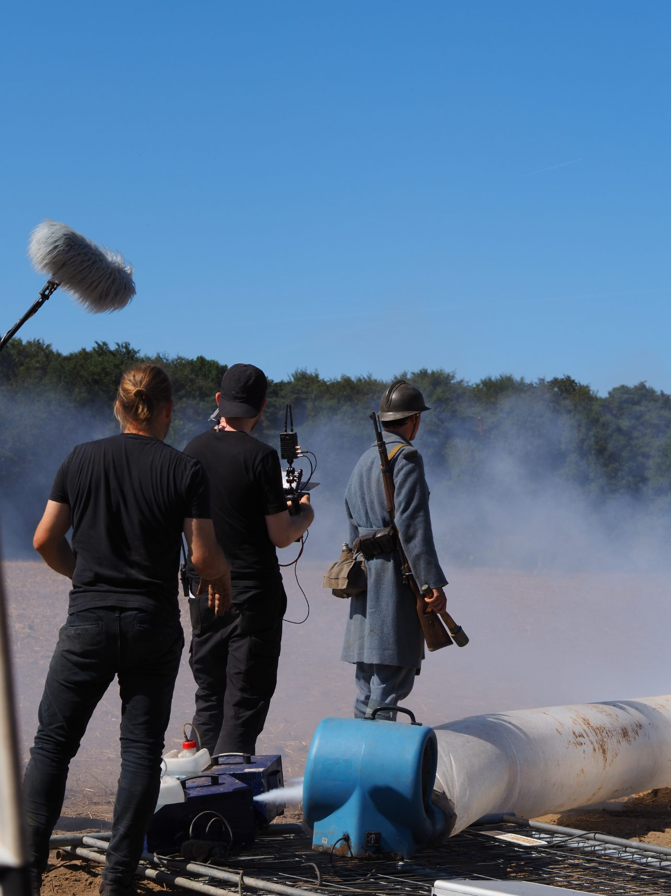
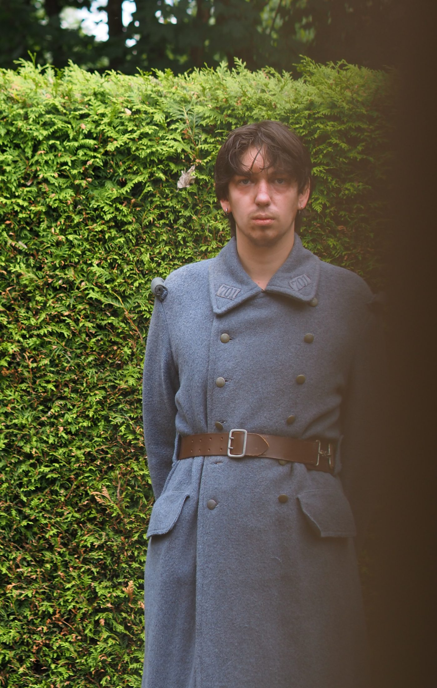

Kunst · Zeichnungen, Fotografien und Serien · 2019–2026
Denken und Fühlen
in Bildern.
Nicht alles lässt sich erklären. Manche Fragen brauchen Linien statt Begriffe.
Die Zeichnungen entstehen dort, wo Sprache an ihre Grenze kommt. Sie sind keine Illustrationen meiner Forschung und keine bloßen Skizzen persönlicher Erlebnisse, sondern eine weitere Form des Nachdenkens über dieselben Fragen: Identität, Schuld, Verantwortung, Freiheit, Erinnerung und das menschliche Miteinander.
Während die Psychologie versucht zu beschreiben, wie Menschen denken und handeln, interessiert mich hier, wie sich menschliche Erfahrung darstellen lässt.

Künstlerische Prägung
Kunst gehörte für mich nie zu den Dingen, die man irgendwann entdeckt — sie war von Anfang an Teil der Familie. Mein Großvater Lui Schaugg arbeitete als freischaffender Maler am Bodensee; auch andere Angehörige beschäftigen sich mit Malerei, Grafik, Kunstgeschichte, Glaskunst und Gestaltung. Zeichnungen, Ateliers und Ausstellungen gehörten deshalb selbstverständlich zu meiner Kindheit.
Vielleicht suche ich deshalb bis heute nach unterschiedlichen Sprachen für dieselbe Frage.
Reflexion · I von II
Das Wesen der Kunst ist immer die Geschichte. Und die Geschichte ist nicht das Wort — das Wort ist nur eine Annäherung an die Geschichte, genau wie es das Bild ist und das Lied.
Gezeichnete Gesichter
Tusche · Aquarell · Marker · 2021–2023
Gesichter sind mein wiederkehrendes Motiv — weniger Porträts bestimmter Personen als Verdichtungen von Erinnerungen und Fragen: Schuld, Freiheit, Verantwortung, Sehnsucht.
Die Arbeiten entstanden über mehrere Jahre, manche in Minuten, andere über Wochen.

„Blauer Vogel, tauber Vogel, verbrauchter Vogel, zerstaubter Vogel, beraubter Vogel. Gib das Träumen auf. Niemals wirst du fliegen, Vogel. Niemals wirst du frei.“
Blauer Vogel · Tusche & Marker · 04.06.23
Originale
Fotografiert statt gescannt.
Papier, Ringe, Schatten, Papierwölbungen und Gebrauchsspuren bleiben bewusst sichtbar. Die Zeichnungen sollen nicht nur als Motive erscheinen, sondern auch als Gegenstände mit eigener Geschichte — so, wie sie tatsächlich entstanden sind.
Alle 19 Original-Seiten im Archiv →
↓ Seite für Seite durchblättern
Buch mit KI freigestellt, Zeichnungen original
Das Urteil
Digitale Serie · 2025
Während sich die frühen Zeichnungen vor allem mit individuellen Innenwelten beschäftigen, richtet sich der Blick hier stärker auf soziale Rollen, Macht, Urteil und öffentliche Wahrnehmung.
Die Figuren erscheinen nicht mehr isoliert, sondern als Teil größerer Beziehungen und Systeme. Fragen nach Schuld und Verantwortung bleiben bestehen, verschieben sich jedoch vom Individuum auf gesellschaftliche Zusammenhänge.


Raumgründe
Digitale Malerei · 2020
Die Serie fragt nicht, wie Natur aussieht, sondern was von einer Landschaft übrig bleibt, wenn man Details entfernt — wann aus wenigen Farben Weite, Licht oder Wetter entsteht.
Digitale Malerei als bewusster Gegensatz: mit einem künstlichen Werkzeug etwas Organisches sichtbar machen.


Reflexion · II von II
Letzten Endes ist es immer das, was die Kunst ist. Was sie versucht. Woran sie sich abarbeitet: der Versuch, die Geschichte einzufangen — die Faszination, die Geschichte, in diesem Moment.

Das Atelier
Der Raum, in dem die Arbeiten entstehen.
Zwischen Zeichnungen, Büchern, Instrumenten und Notizen. Kein abgeschlossenes Atelier, sondern ein Arbeitsraum, in dem sich Psychologie, Kunst, Musik und Schreiben begegnen.
Erste Ausstellung
Gemeinsam mit Ulrike Schaugg und Christine Hausotter
Juni 2024
Die erste öffentliche Präsentation der Arbeiten. Ein Schritt aus dem privaten Arbeitsprozess in den öffentlichen Raum — und damit ein weiterer Abschnitt eines Archivs, das weiter wächst.


Das vollständige Archiv
Was hier nicht steht.
Diese Seite ist eine Auswahl. Alle Zeichnungen, sämtliche Original-Seiten des Notizbuchs, die Reise-Skizzen und die fotografischen Serien liegen vollständig im Archiv.
Zum Archiv →Film & Bühne
Vor der Kamera, auf der Bühne, mit der Stimme.
Neben den Zeichnungen wirke ich in Filmen und szenischen Arbeiten mit — beim Heidelberger Künstler Peter Bösselmann und in Produktionen der Hochschule Darmstadt. Eine Auswahl.

Kurzfilm · Kafka-Jahr 2024 · Heidelberg & Prag
In die Ferne grüßen — Kafka in Zitaten
Ein Kurzfilm zum Kafka-Jahr, gemeinsam von Heidelberg und Prag realisiert — erzählt in Kafkas eigenen Zitaten. Premiere am 12. Dezember 2024 in der Reichspräsident-Friedrich-Ebert-Gedenkstätte, Heidelberg.
Rolle laut Abspann · „Die Zuhörenden / Posluchači"
Kurzfilm · Drama · Sommer 2026 · in Postproduktion
Graben
Nach einem fatalen Angriff kämpft ein verbliebener deutscher Soldat fanatisch gegen einen beinahe unsichtbaren Feind im gegenüberliegenden Schützengraben, während sich sein eigener Graben immer mehr in ein schlammiges Grab verwandelt.
Ich stand als französischer Soldat vor der Kamera — als der beinahe unsichtbare Feind auf der anderen Seite — und war zugleich Double des Hauptdarstellers.
Das Projekt entstand im Sommer 2026 als Zusammenarbeit zwischen Fourmat Film, dem Filmstudiengang Motion Pictures der Hochschule Darmstadt, der Stadt Dieburg und dem Freundeskreis Mediencampus Dieburg e. V. Die Fotografien vom Set sind während der Dreharbeiten selbst entstanden.
Zum Film bei Fourmat Film ↗- Rolle
- Französischer Soldat
- Zusätzlich
- Double des Hauptdarstellers
- Drehbuch
- Matthias Kreter, Nils Gustenhofen
- Produktion
- Fourmat Film
- Ko-Produktion
- Hochschule Darmstadt · Motion Pictures
- Partner
- Stadt Dieburg, Freundeskreis Mediencampus Dieburg e. V.
- Stand
- In Postproduktion
- Fotografie
- Simon Schaugg (Set)


Weitere Mitwirkungen
Filme und szenische Arbeiten aus dem Atelier Klausenpfad von Peter Bösselmann.